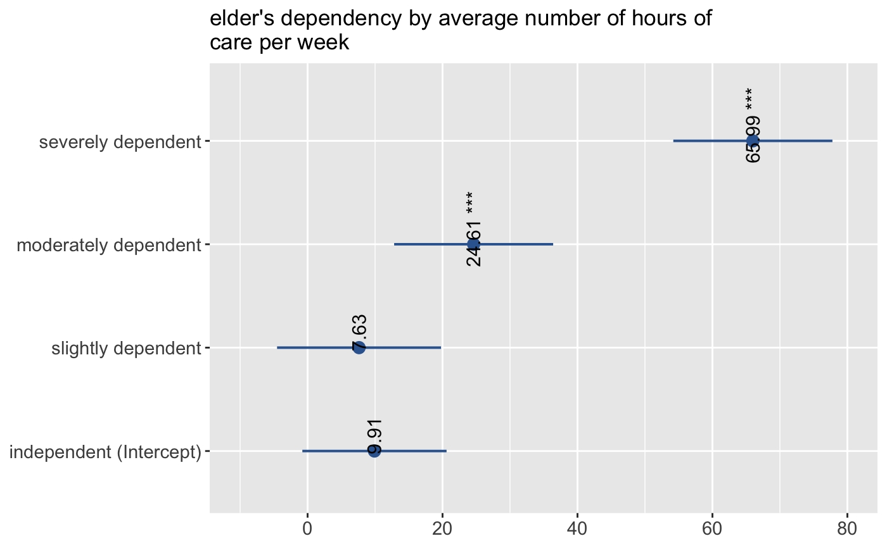

Plot One-Way-Anova table sum of squares (SS) of each factor level (group) against the dependent variable. The SS of the factor variable against the dependent variable (variance within and between groups) is printed to the model summary.
sjp.aov1( var.dep, var.grp, meansums = FALSE, title = NULL, axis.labels = NULL, rev.order = FALSE, string.interc = "(Intercept)", axis.title = "", axis.lim = NULL, geom.colors = c("#3366a0", "#aa3333"), geom.size = 3, wrap.title = 50, wrap.labels = 25, grid.breaks = NULL, show.values = TRUE, digits = 2, y.offset = 0.15, show.p = TRUE, show.summary = FALSE )
| var.dep | Dependent variable. Will be used with following formula:
|
|---|---|
| var.grp | Factor with the cross-classifying variable, where |
| meansums | Logical, if |
| title | character vector, used as plot title. Depending on plot type and function,
will be set automatically. If |
| axis.labels | character vector with labels used as axis labels. Optional argument, since in most cases, axis labels are set automatically. |
| rev.order | Logical, if |
| string.interc | Character vector that indicates the reference group (intercept), that is appended to
the value label of the grouping variable. Default is |
| axis.title | Character vector of length one or two (depending on the
plot function and type), used as title(s) for the x and y axis. If not
specified, a default labelling is chosen. Note: Some plot types
may not support this argument sufficiently. In such cases, use the returned
ggplot-object and add axis titles manually with
|
| axis.lim | Numeric vector of length 2, defining the range of the plot axis.
Depending on plot type, may effect either x- or y-axis, or both.
For multiple plot outputs (e.g., from |
| geom.colors | user defined color for geoms. See 'Details' in |
| geom.size | size resp. width of the geoms (bar width, line thickness or point size, depending on plot type and function). Note that bar and bin widths mostly need smaller values than dot sizes. |
| wrap.title | numeric, determines how many chars of the plot title are displayed in one line and when a line break is inserted. |
| wrap.labels | numeric, determines how many chars of the value, variable or axis labels are displayed in one line and when a line break is inserted. |
| grid.breaks | numeric; sets the distance between breaks for the axis,
i.e. at every |
| show.values | Logical, whether values should be plotted or not. |
| digits | Numeric, amount of digits after decimal point when rounding estimates or values. |
| y.offset | numeric, offset for text labels when their alignment is adjusted
to the top/bottom of the geom (see |
| show.p | Logical, adds significance levels to values, or value and variable labels. |
| show.summary | logical, if |
A ggplot-object.
data(efc) # note: "var.grp" does not need to be a factor. # coercion to factor is done by the function sjp.aov1(efc$c12hour, efc$e42dep)#> Warning: Continuous limits supplied to discrete scale. #> Did you mean `limits = factor(...)` or `scale_*_continuous()`?